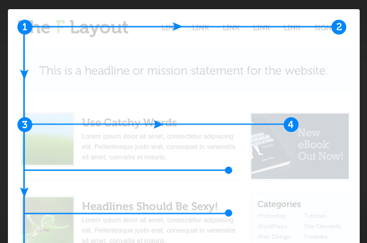
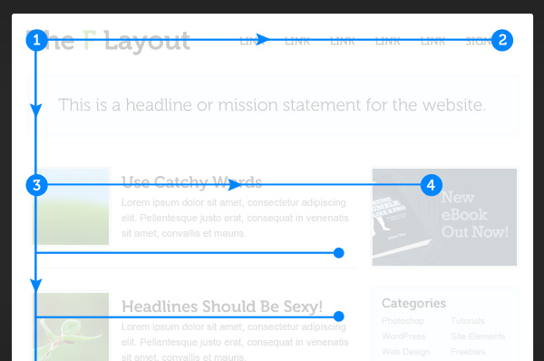

Introduction
Is117 taught me many features of how to design a website from understanding the basics of creating a website. I took this class as an elective and I entirely enjoyed it. From the beginning of the semester till now I can see how much I improved of how to deisgn websites. In this portfolio, I am going to provide all the projects and skills I learned in this class. Thank you.
Github/ Webstorm

This is the tutorial for how to utilize github, as well webstorm would play a role in this by helping the user creating the website. Github and webstorm plays hand to hand each other which makes it a bit easier to create websites.
Github Tutorial
1. Download and install the latest version of GIT
2. Create an account on Github by using your email address
3. Download web storm
4. Create a repository to start a new project
5. Once you get a git repository, use it to clone it on webstorm
6. There two different ways to add your code on github: Webstorm or github (Look at the appropriate program steps you need
7. Github: 1. Write your code on github
8.Github: 2. Go to webstorm go to VCS, git then click pull
9.Github: 3. Go to master branch to merge the information from git. Click on master branch to click on merge into current
10.Webstorm: 1. Write your code on webstorm on your branch
11. Webstorm: 2. On webstorm go to VCS, Git, Commit, Write the task you are doing that for that line. Try to commit for every line possible so it will be easier to track your code
12. Webstorm: Go to VCS, git then click push
13. Webstorm: Go to master branch to merge the information from git. Click on master branch to click on merge into current
Defintions
I have included all the definitions we learned in class. The definitions that is in this web page are boilerplate terms, and github terms
Boilerplate Defintions
Doc: filename extension for word processing documents
Toc.md : Table of contents
Css.md: cascading style sheets are used to format the layout of web pages
Extend.md: is a feature in a computer that allows a user to extend viewing capabilities by using two or more monitors at the same time
Faq.md: Frequently answered questions they are created for software programs, computer hardware, websites, and online services.
Html.md: Hypertext markup language to format text and graphics
< br> Js.md: Javascript is a programming language commonly used for web development
Misc.md: Minimal instruction set computer is a processor architecture with a very small number of basic operations and corresponding opcodes
Usage.md: To set the basic structure, add some site, run your site, and deploy your site
Img: Image stored in a computer device
.gitignore: file specifies intentionally untracked files that Git should ignore
Js: Javascript is a programming language commonly used for web development
Main.js: It is used for initialization, and the other files contain application logic
Plugins.js: a common code written in javascript which can be used in website development instead of writing our own javascript code .editorconfig:project: consists of a file format for defining coding styles and a collection of text editor plugins that enable editors to read the file format and adhere to defined styles.
.gitattributes: is a simple text file that gives attributes to pathnames.
.gitignore: file specifies intentionally untracked files that Git should ignore
404.html: is an error that is displayed when the server fails to locate the page or file that the user requests.
Browserconfig.html: define site conformations such as notifications
Favicon.ico: a small icon that identifies a website in a web browser
Humans.txt: a representation of data or information that can be naturally read by humans.
Icon.png: your computer screen represents an object or a program on your hard drive.
Index.html: the front page. It is the URL or local file that automatically loads when a web browser starts and when the browser's 'home' button is pressed.
Robots.txt: It is a protocol that is a standard used by websites to communicate with web crawlers and other web robot.
Site.webmaifest: defines the developers' preferred display mode for the website.
Tile-file. Png: A tile is an image that represents your app on the start screen
Index for boilerplate
doctype html : it is an instruction to the web browser about what version of HTML the page is written in.
html class="no-js" lang="" : This mentions that there is no java script as a language
head : The heading of the html command page
meta charset="utf-8": That meta tag basically specifies which character set a website is written with.UTF-8 (U from Universal Character Set + Transformation Format—8-bit) is a character encoding capable of encoding all possible characters (called code points) in Unicode.
Title /title: Title tag of the document
meta name="description" content="": The meta tag provides metadata about the HTML document. ... Meta elements are typically used to specify page description, keywords, author of the document, last modified, and other metadata.
Meta name="viewport" content="width=device-width, initial-scale=1": The meta specifies to name it viewpoer and speciifies the scale it should have
link rel="manifest" href="site.webmanifest": It mentions the link and the link name
link rel="apple-touch-icon" href="icon.png": It mentions the link and the link name
link rel="stylesheet" href="css/normalize.css":It mentions the link and the link name
link rel="stylesheet" href="css/main.css": It mentions the link and the link name
meta name="theme-color" content="#fafafa": Says the color name for the meta
/head: closes the heading
body: The beginning tag for body
P Hello world! This is HTML5 Boilerplate. /p: Starts the paragraph with this name
script src= "js/vendor/modernizr-((Modernizr_Version)). mini.js"/ Script: It specifies the URL of an external script file which is Modernizr
Githib Defintions
GIT: A distributed version-control system for tracking changes in source code during software development.
GIThub: A web-based hosting service for version control using Git. It is mostly used for computer code
Repository: Generically refers to a central place where data is stored and maintained
Clone: Creates a local copy of a project that already exists remotely. The clone includes all the project’s files, history, and branches.
Commit: Saves the snapshot to the project history and completes the change-tracking process. In short, a commit functions like taking a photo.
Push: Updates the remote repository with any commits made locally to a branch
Pull: Updates the local line of development with updates from its remote counterpart. Developers use this command if a teammate has made commits to a branch on a remote, and they would like to reflect those changes in their local environment.
Branch: Shows each section of being worked on locally.
Merge: This command is typically used to combine changes made on two distinct branches. For example, a developer would merge when they want to combine changes from a feature branch into the master branch for deployment.
Merge Conflict: Sometimes when you get merge conflicts when merging or pulling from a branch. It will tell you to fix it and and then commit your results.
Fetch: Related to getting, reading, or moving data objects
Remote: A user does not have physical access, but which he or she can access or manipulate via some kind of computer network.
Skills
In this section, I will explain the skills I learned in this class.

Github
Webstorm
HTML
Linux

CSS

JS
How the internet Works

Z Layout

F Layout
Files and Folders
How does the internt works? / Linux
In this section, inform of how each component of how the internet works and how linux works.

Linux
In 1969-1970, Kenneth Thompson and others at AT&T Bell Labs began developing a small operating system PDP-7, also known as Unix
In 1972-1973 the system was rewritten in the programming language C.
AT&T continued developing Unix under the names “System III” and later “System V".
Soon, there was many different versions of Unix.
In 1984 Richard Stallman’s Free Software Foundation (FSF) began a project after which, the software could be freely used, read, modified, and redistributed. The FSF successfully built a vast number of useful components, including a C compiler (gcc), an impressive text editor (emacs), and a host of fundamental tools.
In 1991 Linus Torvalds began developing an operating system, which he named “Linux” . This was known as a freely-modifiable and very useful operating system.
This is an example of a Linux-based system: https://www.ubuntu.com/
The LINUX system has a few commands which are listed here: Common Commands
Under this website, we will inform of how each component of how the internet works and how linux.
Many people will take the internet granted.
The internet has so many functions which will be listed down here. How Does the Internet Work?
How does the Internet work?
In this tutorial we will talk about DNS, IP, Domain Names,Top level domain names(TLD), how to read a web address,SSL secure website browsing through HTTPS over port 443 and HTTP over port 80, REST and Roy Fielding's dissertation.
- 1. Laptop and computer is connected to the Wifi which is connected to Internet service provider (ISP) which will be able to connected to multiple networks globally.
- a. Protocol: a well known set of rules and standards used to communicate between machines.
- 2. Every device on the internet in the world have a unique address called Internet Protocol address.
- a. The IP address is just an a number and it it similar like a home address.
- b.The IP address would be represented in bits.
- c. Traditional IP address are 32 bits long with 8 bits from each part which are called IPV4.
- d. Traditional hierarchy IP: country network, region network, subnetwork, device.
- e. In IPV6: It is a multi year which has 128 bits which provides 340 undecillion unique address.
- 3. To visit a website one device is asking another device for information. One device will send its IP address then receive its origin address so it would easier for the devices to understand where to send their information.
- 4. Domain Name systems (DNS) associates websites name to its ip address.
- a. For example, I will type up facebook.com and the DNS will find the correct IP address to the destination address.
- 5. You need to be careful of DNS spoofing which is when a hacker types into the DNS server and changes to match the main name with the wrong IP address and this will make you regard a fake website.
- 6. You need to be careful of DNS spoofing which is when a hacker types into the DNS server and changes to match the main name with the wrong IP address and this will make you regard a fake website.
- 7.To access the web you use a web browser by writing the url.
- 8. The computer talks to another server by communicating to each other called http.
- 9.The server will send a get request to get the website it needs to get all the html code they need.
- a. Go to facebook.com it will go to facebook server then you will get all the html code from that website.
- b. Images and videos are separate files with unique urls so you need to a get a get request text in order to get that html.
- 10. If the user hasl send a http post request by adding cookies.
- a. The user will use this request when they are filling out surveys or searching something.
- 11. Cookies will be used by remeing who you are every time you use the internet.
- a.The user will use this request when they are filling out surveys or searching
- 12. The ssl secure website prevents snooping and tampering by communicating on a secure channel by using secure sockets layer and transport layer
- 13. The secure sockets layer and transport layer is a layer of security wrapped around your communications.
- 14. There would be a lock near the https webpage which will indicate if it has a secure connection.
- a. While searching a website with a secure connection then it provides a digital certificate.
- b. If you searching a website without a secure connection then it will provide a janky certificate and warn you.
- 15. There are two common types of protocols which called https and http
- a. Https is used over a secure website with port 443. Majority of the websites are under https.
- b. Port is a logical connection place and will specifically use the internet protocol. Ports will be numbered from 0 to 65535, and the ports 0 to 1024 will be identified as certain privileged uses
- c. Https with port 443 will allows users to send or receive their information with encrypted connection which means hackers will see your password encrypted
- d. Http with port 80 will allow users to send or receive information with no encrypted connection which means hackers will your password as it is. (Not a secure website)
- 16. The ssl secure website prevents snooping and tampering by communicating on a secure channel by using secure sockets layer and transport layer
- a. Independent: If either the client or server changes the code it won’t affect anything
- b. Staless: server does not need to know anything about what state the client is in and vice versa
- c. clients send requests to retrieve or modify resources, and servers send responses to these requests
- d. The format to send requests are http verb {get, post, put, delete}, a header {to allow the client to send their message about their request}, a path to resource and and optional message about the data.
- e.Rest is being very common these days
- 17. Roy Fielding is an American computer scientist who is the originator of rest. He helped the computer science world by adding this factor and making everyone life so much easier.
Z layout/ F Layout
In this section, I will explain the differences between Z- layout and F- layout.
 

Z Layout
In a z- layout it includes four requirements which are branding, hierarchy, structure, and call to action. Choosing the right layout will impact the user behavior of how they are utilizing. Each layout has its own advantages and will impact the user experience. The layout is simply easy to follow in the sense of the layout. The webpage would by structured the letter Z. From the picture below you can see the line from 1- 2, the line 2-3, and the line 3-4. Usually in line 1-2 it would be a header or something important. In line 2-3 there would be content and pictures describing the page. In line 3-4 there would be call to action which consists of signing up or posting an advertisement. This website is most common layout because it is easy to follow the website. Majority of the people in the world read from left to right as similar in this layout we follow the same structure.The website would first include the header to grab the user attention, then put some content or pictures,and then finally they would something interactive by posting a user interaction.

F Layout
>The F layout for web design focuses on the natural instinct of web browsers/surfers. In other words, this type of layout is based on research and eye tracking studies of where the particular eye of a user goes to first when on a website. The user will start at the top-left side of the screen. Then, they will then scan towards the right to the top-right side of the screen. After, they will move down and read the next row of content in full all the way to the page’s sidebar.